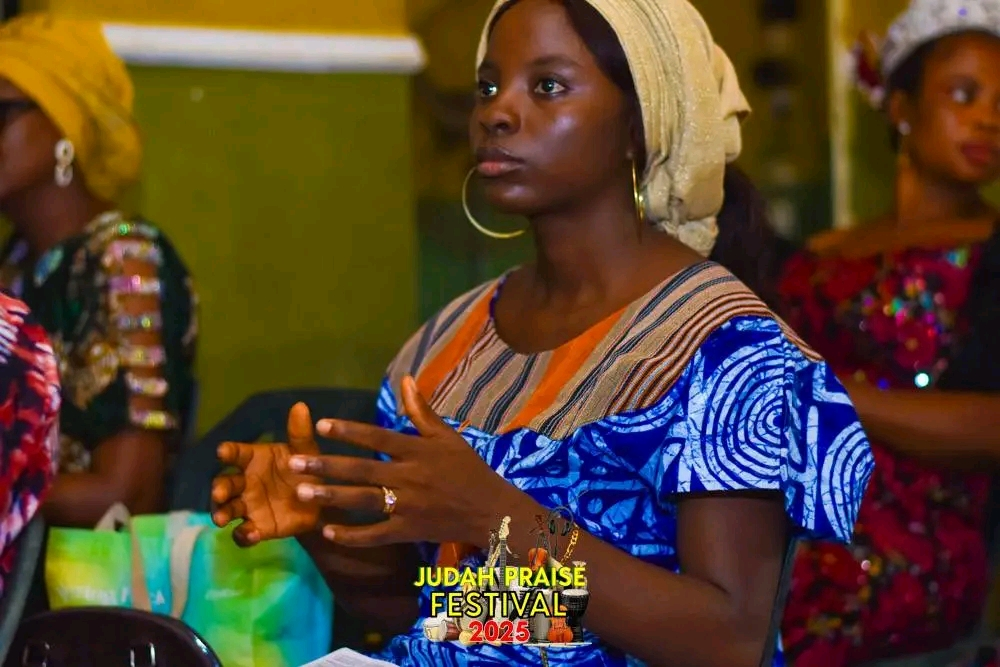
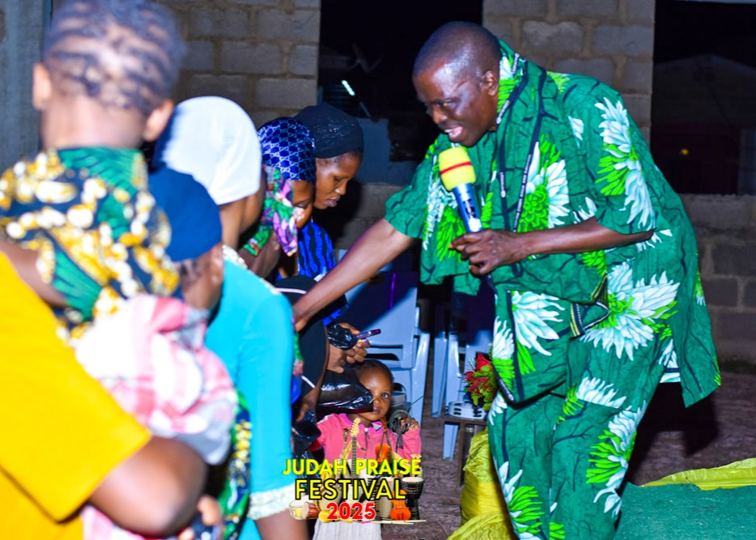
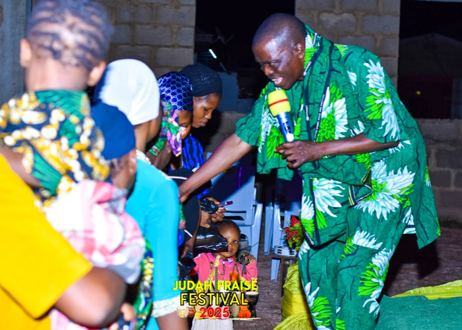
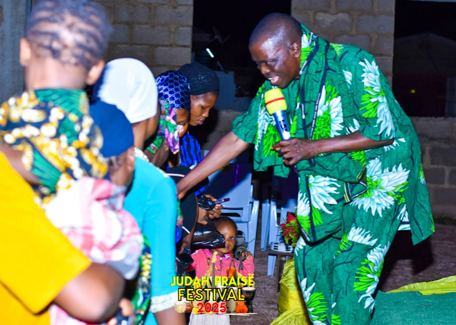
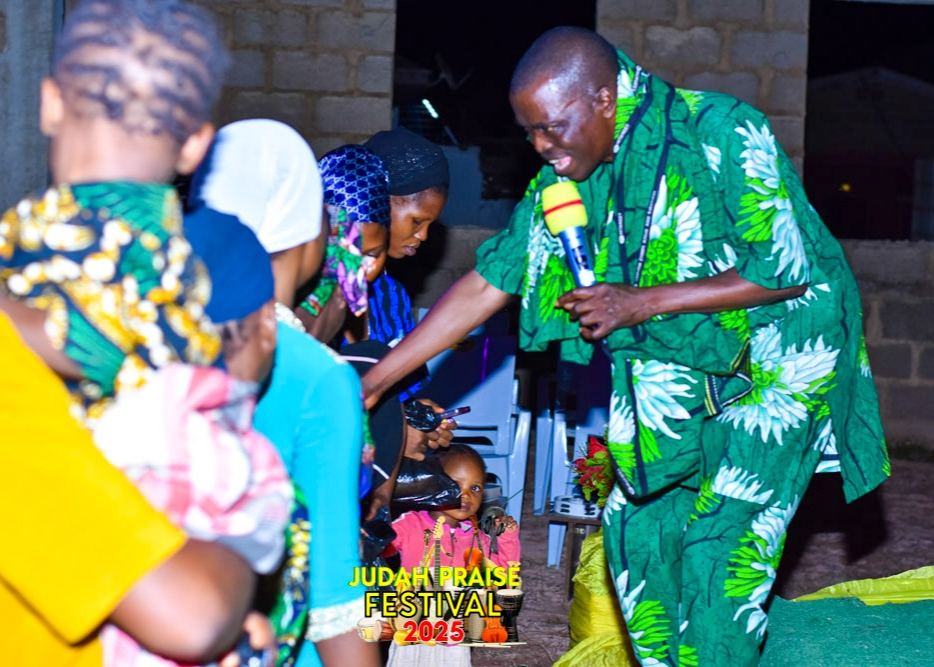

 




To restore the lost soul and destinies back to Christ’s Kingdom for preservation through the preaching of the Word of Faith.
To develop Christians full of Faith.
To nurture the heir.
Kingdom Citizens Church International, located at Wole Iredele Street, Abiola, Abeokuta, Ogun State, Nigeria, is a family of believers passionate about the Kingdom of God. We are committed to raising Christians rooted in faith, walking in destiny, and living as heirs of the Kingdom.

Founder and Senior Pastor of Kingdom Citizens Church International, a visionary leader with a passion for faith and kingdom impact.

Co-founder and mother in faith, with a heart for nurturing believers and strengthening families in Christ.

Resident Pastor, currently leading the Osara branch with dedication and faith-driven leadership.

Youth Pastor, passionate about empowering the next generation of believers with the Word of God.